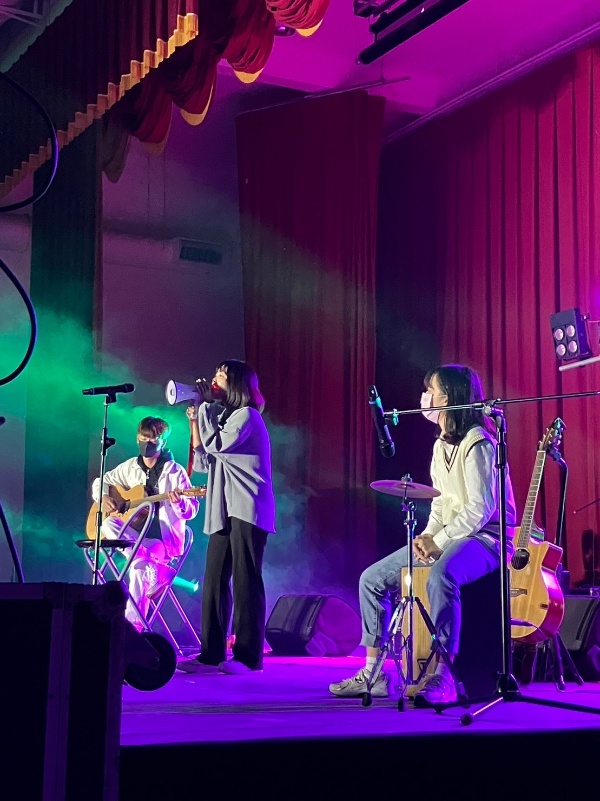
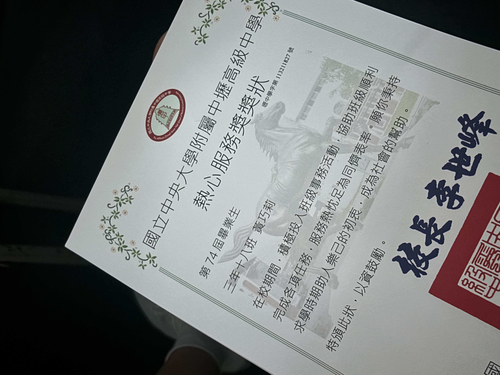
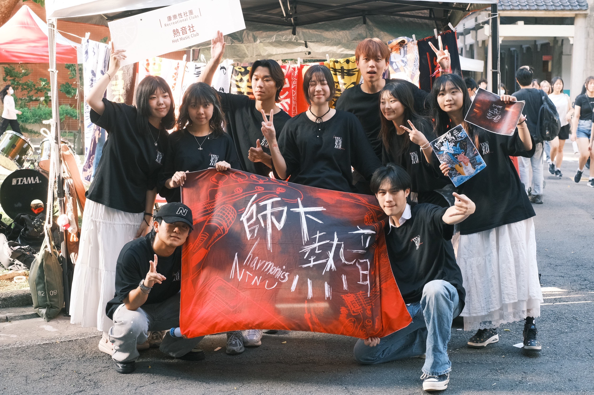

個人經歷
2024 國立中央大學附屬中壢高級中學 畢業
主修科技應用與人力資源發展，學習教育科技、資料分析與組織發展等領域。
高中社團與幹部經驗

吉他社 社長
帶領社員籌辦校內外表演與音樂交流活動，培養團隊合作與舞台統籌能力。

畢聯會 活動組
參與畢業典禮與畢旅規劃，學習活動流程設計與人際協調。
2024至今 國立台灣師範大學
科技應用與人力資源發展學系
大學社團與幹部經驗

人資系學會 公關部
負責對外聯繫、活動宣傳與合作窗口，培養溝通與品牌形象維護能力。

系迎新活動 主持人
策劃並主持新生迎新活動，提升舞台口語表達與組織協調能力。
2025｜腦機介面訓練協定遊戲化研究報告
研究如何透過遊戲化設計提升使用者在腦機介面訓練中的動機與表現。